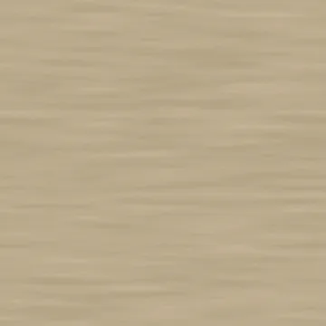
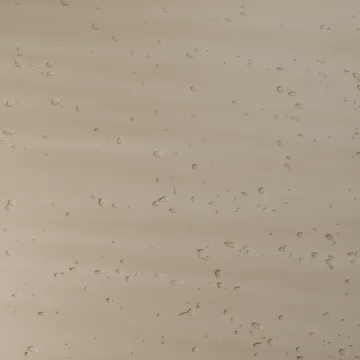
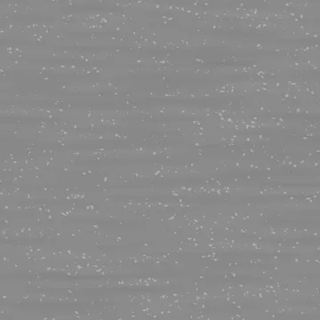
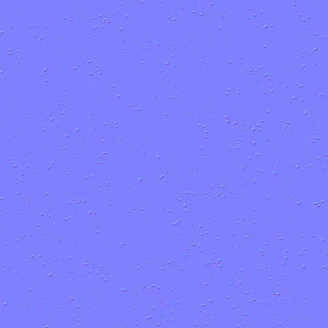
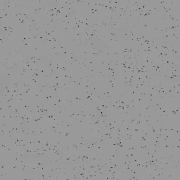
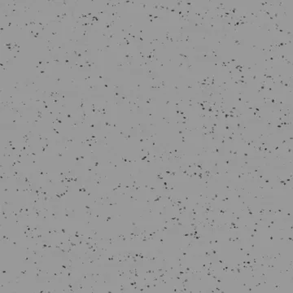
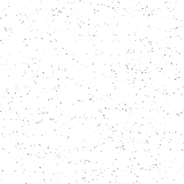
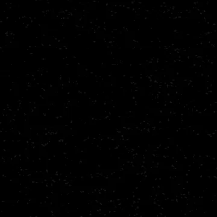

Base color
sRGB · RGB8
4096 × 4096 · 1.19 MiB
SHA-256
a6140eafef5a88c6cb1c8c29a4c10e306431f688d78e915f2fa845a4a63d3677Rebuilt suite / 02
Fine bed-correlated irregular open pores without painted cavity outlines; shallow honed sedimentary surface.
The specimen and matched surface proof are different presentations. Native texture resolution does not determine render resolution.


Specimen: Blender 4.5.3 LTS · CPU · 768 maximum / 128 minimum samples · adaptive threshold 0.005 · denoising: false · AgX.
Specimen manifest · Matched-proof manifest · Editable specimen scenes · Renderer source · Review and remaining limits
Specimen SHA-256 ea5c065d7e513ca85126e9ecf189e47ffd1b671f7255b72287adc60e56da98bd
Proof SHA-256 bc5358298707816661d024bda1d5d24ce96b28f0c25343887f1e78504cf9d6f7
Base color uses sRGB; data maps use linear / Non-Color. Displacement in meters = (height − 0.5) × 0.0032. Pair macro height with residual normal for geometric displacement, or use the full normal without macro displacement.
Previews below are reduced display copies. Each link opens the unchanged native 4096 × 4096 map.

sRGB · RGB8
4096 × 4096 · 1.19 MiB
a6140eafef5a88c6cb1c8c29a4c10e306431f688d78e915f2fa845a4a63d3677
Linear · Gray8
4096 × 4096 · 0.66 MiB
198ddd1e793a5a1ca4e8d08a0da9540524b4c6774c4780b4adbf943fc80a04e2Linear · Gray8
4096 × 4096 · 0.02 MiB
334c4a79f661f8f9c215b7fd06284d5fb3fe7fd3822f10dc8842f85f664c9a7fTangent space · RGB8
4096 × 4096 · 2.30 MiB
f2cda91387261763bd1ebb8ecda9a2c5a8f569ede6aadf2fee2b590b2c28813d
Tangent space · RGB8
4096 × 4096 · 2.30 MiB
c568e57449a68e2fba2ca6b9a280e5a83c43045ec54ba885dc4fbfc0efb46ef0
Linear · Gray16
4096 × 4096 · 3.58 MiB
991446583c45ac4f7bdd20d95fba3e5d766373ddeb0837b2fbfb84dbaece583f
Linear · Gray16
4096 × 4096 · 6.92 MiB
4092a48f36dea6a528f9fad888595af5d063465a0f3d2dc5006d5cfc4ba670bdTangent space · RGB8
4096 × 4096 · 4.75 MiB
395e56ae1be8d5d22a9d9da4a0db9a1a462d2353f0b8cd79423a4d6d3fd5025b
Linear · Gray8
4096 × 4096 · 0.59 MiB
ca508c50543b12da274d73f2321c0d1290a93e3c99f5bb563e7350565913d3a9Linear · R: AO / G: roughness / B: metallic
4096 × 4096 · 1.32 MiB
8549a0bea891b8bd1cec6367bb640198fb763e3ca58e392d76eda1d8a66d74e7
Linear · Gray8
4096 × 4096 · 0.31 MiB
037ef71ad985d434852f5b1f3232b2594cd821c42efa577a96e756de93e069ef
Linear · Gray8
4096 × 4096 · 0.02 MiB
eb472d6bf383e4da4fb64a8cedee8fb37709545cad9a1058396c5b77ba2c577eProcedural anatomy and finish models use artistic physical estimates. These are not measured scans or calibrated reflectance data.
Physical material metadata · Original appearance comparison · Preserved baseline evidence